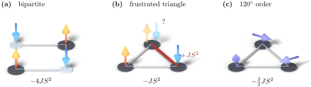

Advanced Quantum Materials 2027 · All lectures · Lecture notes
Session 6. Classical Magnetism and Magnons
6.9 The Heisenberg model on a general lattice
The argument of Section 6.8 did not use the fact that we had only two sites. For a generic lattice with hopping \(t_{ij}\) between sites \(i\) and \(j\) and a local interaction \(U\), the same second-order argument applies to every connected pair independently in the limit \(U\gg t_{ij}\), and it gives the generalized Heisenberg Hamiltonian
\[H_\text{Heis} = \sum_{\langle ij\rangle} J_{ij}\, \mathbf S_i\cdot\mathbf S_j, \qquad J_{ij} = \frac{4t_{ij}^2}{U}. \tag{6.5}\]
Since \(J_{ij}\propto t_{ij}^2\), this superexchange coupling, derived directly from a single-orbital Hubbard model, is always positive and antiferromagnetic, regardless of the sign or the geometry of \(t_{ij}\). More general microscopic models, which are not Hubbard models or have several orbitals, can give couplings of both signs, and they do. In Section 6.11 we will see explicitly how a ferromagnetic coupling appears when a second, intermediate orbital takes part. In all of this session we use the following sign convention. A coupling \(J_{ij}>0\) favors antiparallel neighboring spins, which is antiferromagnetic, and \(J_{ij}<0\) favors parallel neighboring spins, which is ferromagnetic. If we treat the spins in (6.5) as classical vectors, we already obtain both classical ground states on a bond between two sites, which are antiparallel for \(J>0\) and parallel for \(J<0\).
6.10 Bipartite order versus geometric frustration
On a bipartite lattice, such as the square or the honeycomb lattice, the sites split into two sublattices \(A\) and \(B\) so that every bond connects an \(A\) site with a \(B\) site. On such a lattice the antiferromagnetic Heisenberg model (6.5) has an obvious classical ground state. All spins on \(A\) point in one direction and all spins on \(B\) point in the opposite direction, and in this way every bond has antiparallel neighbors at the same time, which is what it prefers. This is the collinear antiferromagnetic order with two sublattices that we already saw at the mean-field level in Section 6.4, and (6.5) explains why it appears. In the large-\(U\) limit, the mean-field Hubbard model on a bipartite lattice reduces exactly to this Heisenberg model.
Frustrated lattices are different. On a non-bipartite lattice, of which the kagome and the triangular lattices are the standard examples, it is not possible to color the sites with two colors so that every bond connects opposite colors. For instance, a triangular plaquette has three sites that are all neighbors of each other, and no choice of up and down spins makes all three bonds antiparallel at the same time. The antiferromagnetic tendency of \(J_{ij}>0\) is still present on every single bond, but it cannot be satisfied everywhere at the same time, and this is what is called geometric frustration. The best compromise for the system is usually a noncollinear arrangement, and the standard case is spins at \(120^\circ\) from each other on a triangular plaquette. This arrangement maximizes the total antiferromagnetic character bond by bond, without fully satisfying any single bond. This noncollinear character also appears directly in the mean-field solution of the corresponding electronic Hamiltonian, and not only in the spin model. Figure 6.3 shows next to each other the bipartite case, the frustrated collinear attempt and the \(120^\circ\) compromise, together with the classical bond energies that decide between the last two.

Spins sit on the sites of a triangular lattice, and the coupling is ferromagnetic, \(J<0\) in the convention of (6.5). Is there geometric frustration?
Show the answer
The correct option is A.
Frustration needs an antiferromagnetic coupling, because only then do neighbors want opposite directions. For \(J<0\) one common direction satisfies all bonds, whatever the lattice is.
Notebook check-in: session6.ipynb, “(Exercise) Magnetic instabilities of the square lattice” and “(Exercise) Non-collinear magnetic order from geometric frustration”
Compare at the mean-field level a bipartite lattice, the square lattice, with a frustrated one, the triangular or kagome lattice. The square lattice should converge to the collinear order with two sublattices of Section 6.10, and the frustrated lattice should converge to a noncollinear compromise. Both results can be traced back to the sign convention of (6.5) on each bond.
Try it. In the cell, run the bipartite square lattice with U=3.0. The antiferromagnetic guess gives \(M_z\) of equal size and alternating sign on neighboring sites, and its total energy is about 0.3 lower than that of the ferromagnetic guess. Then run the triangular lattice of the frustration cell, where neighboring spins are neither parallel nor antiparallel.